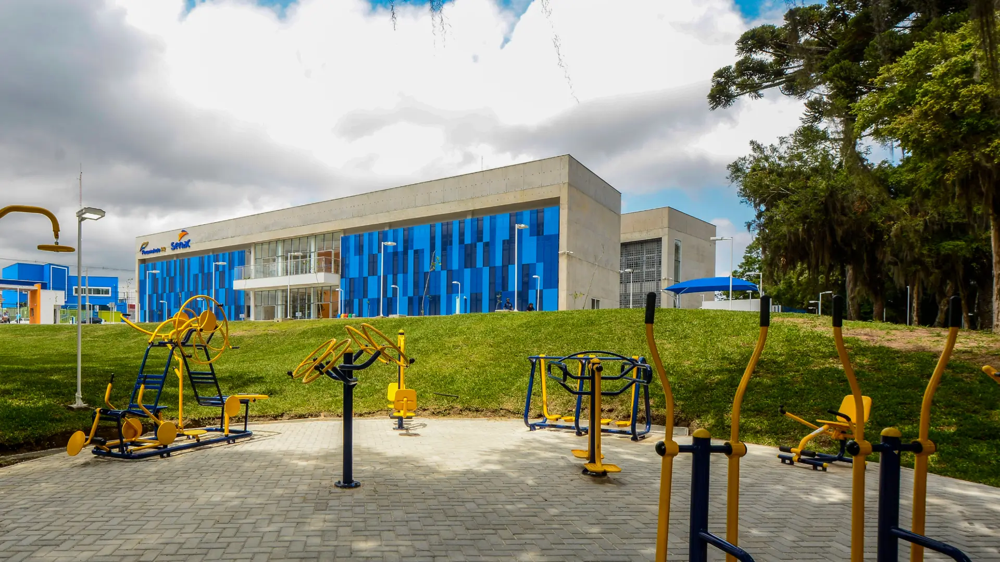

imagem aérea da construção do sesc sjp, com resolução 800x600 com tamanho de 52.6kb

imagem aérea da construção do sesc sjp, com resolução 800x600 com tamanho de 87.5kb

imagem aérea da construção do sesc sjp, com resolução 800x600 com tamanho de 263kb

imagem aérea da construção do sesc sjp, com resolução 800x600 com tamanho de 60.7kb

imagem da área estica velho do sesc em formato avif, com resolução 1920x1080 com tamanho de 192,7kb

imagem da área estica velho do sesc com resolução 1920x1080 com tamanho de 52.6kb

imagem imagem da área estica velho do sesc sjp, com resolução 1920x1080 com tamanho de 866.5kb

imagem da áred estica velho do sesc sjp, com resolução 1920x1080 com tamanho de 247.6kb

imagem da fachada do senac, com resolução 1500x744 com tamanho de 102.6kb

imagem da fachada do senac, com resolução 1500x744 com tamanho de 243.5kb

imagem da fachada do senac, com resolução 1500x744 com tamanho de 529.2kb

imagem da fachada do senac, com resolução 1500x744 com tamanho de 135.8kb

imagem aérea da construção do sesc sjp, com resolução 275x183 com tamanho de 3.9kb

imagem aérea da construção do sesc sjp, com resolução 275x183 com tamanho de 5.9kb

imagem aérea da construção do sesc sjp, com resolução 275x183 com tamanho de 23.2kb

imagem aérea da construção do sesc sjp, com resolução 275x183 com tamanho de 4.5kb

imagem aérea sesc sjp, com resolução 1280x720 com tamanho de 98.4kb

imagem aéreado sesc sjp, com resolução 1280x720 com tamanho de 200.4kb

imagem aéreado sesc sjp, com resolução 1280x720 com tamanho de 457.7kb

imagem aéreado sesc sjp, com resolução 1280x720 com tamanho de 109kb